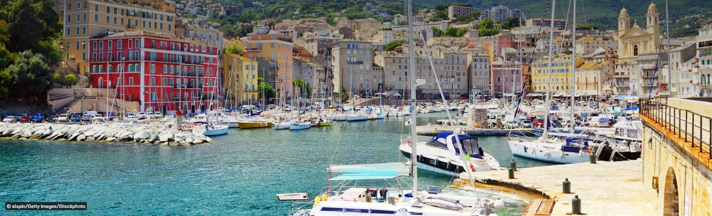

Bastia története és felemelkedése elszakíthatatlanul összefonódott a Régi Kikötővel, amelyet a 14. században a genovai kormányzók kezdtek el kiépíteni, hogy biztonságos tengeri kaput nyissanak a sziget és a kontinens között. Évszázadokon át ez a szűk, sziklák közé ékelt öböl volt Bastia gazdasági motorja: itt rakodták ki a genovai gályák a luxusárukat, és innen indultak útnak a korzikai borral, olívaolajjal megtöltött hordók. Bár a modern kereskedelmi hajók már a szomszédos, nagyobb kikötőt használják, a Vieux Port megőrizte autentikus tengeri jellegét. A mai napig helyi halászok vetik ki innen a hálóikat, emlékeztetve a várost az ősi, tengerrel kötött szövetségére.
A kikötő látképe az egész Földközi-tenger vidékének egyik legdrámaibb és legtöbbet fotózott panorámája. Az öböl északi oldalán, szinte közvetlenül a vízpart felett magasodik az Église Saint-Jean-Baptiste monumentális, kéttornyú barokk temploma, amelynek sárgás homlokzata fenségesen tükröződik a tengeren. Ezzel éles kontrasztot alkot a kikötő déli oldalán, a meredek sziklafal tetején trónoló Citadella (Terra Nova) masszív, erődített tömbje. A két történelmi negyed között megbúvó kikötőben sétálva az utazót körbeöleli a történelem: a patinás, magas, színes olaszos bérházak és a szűk sikátorok mind a genovai építészek zsenialitását dicsérik.
Estére a Vieux Port teljesen átalakul, és a nappali békés hangulatot felváltja a hamisítatlan, nyüzsgő mediterrán életérzés. A kikötő mólóit és sétányait végig elegáns éttermek, hangulatos kávézók és nyitott teraszú bárok szegélyezik, amelyek az esti fényekben úszó öbölre néznek. Ez Bastia gasztronómiai és társasági életének abszolút központja, ahol a ringatózó vitorlások és halászhajók árbócainak lágy koccanása adja a háttérzenét. A helyi éttermekben a tenger legfrissebb gyümölcsei, a hagyományos korzikai vadételek és a neves helyi borok mellett a látogatók nemcsak a sziget ízeit, hanem annak vendégszerető, lüktető lelkét is megízlelhetik.